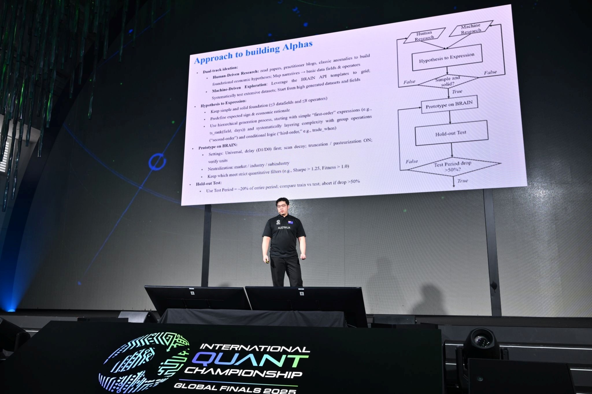

Junlin places 2nd in the Regional Final of the WorldQuant International Quant Championship 2025 and represents Australia at the Global Final.
This competition focuses on quantitative modelling, including the development of mathematical models, feature engineering, data mining, statistical analysis, machine learning, optimisation, and predictive modelling for large-scale, multidimensional datasets.
